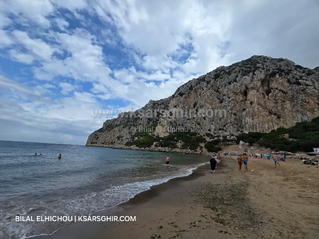

📚 Travel guide
Tanger Med ferry times: live board, Algeciras line (1 h 30 to 2 h 30), Motril, Barcelona, the fixed-date ticket and access from Ksar Sghir.

For Tanger Med ferry times, the busiest line is Tanger Med ⇄ Algeciras: the crossing takes 1 h 30 to 2 h 30 depending on the company and ship, with departures almost all day, up to around 30 to 40 crossings a day in summer. Times change, so the live board and your ferry company are always the reference.
The information comes straight from the Tanger Med port board and updates automatically.
Shown as-is from the port’s live board: “FERMÉ” means check-in is closed, “OUVERT” that it is open.
Tanger Med lies east of Ksar Sghir, opposite Algeciras in Spain. Routes are approximate.
| Route | Approx. time | Frequency | Notes |
|---|---|---|---|
| Tanger Med ⇄ Algeciras | 1 h 30 – 2 h 30 | All day, 30 to 40 a day in summer | Main line, several companies |
| Tanger Med ⇄ Motril | about 8 h | Daily in 2026 | Handy from Granada and eastern Andalusia |
| Tanger Med ⇄ Barcelona | 30 – 35 h | About twice a week | Long overnight crossing with cabins, for travelling with your car |
| Tanger Med ⇄ Genoa | over a day | Via Barcelona | The Italian line, on the same rotation as Barcelona |
The Tarifa line leaves from Tanger Ville port, not Tanger Med; the crossing takes about 1 hour.
Several companies run the line, including Baleària, FRS / DFDS, Naviera Armas – Trasmediterránea and Africa Morocco Link. Times depend on the ship: some cross in about 1 h 30, others take close to 2 h 30. The first sailing is usually just after midnight and the last just before.
Fares vary by company, season and ticket type: foot passengers usually start from around €30 one way, and a car adds to the price. Book on the company’s official site or through a trusted agency.
During Operation Marhaba 2025, a fixed-date-and-time ticket (billet fermé) became a condition for entering the port at Tanger Med and Algeciras from 1 to 31 August, as already applied at Tanger Ville and Tarifa. The aim is to match traffic to the ships’ real capacity.
To learn more about the port and its figures, read Tanger Med Port.
About 1 h 30 to 2 h 30, depending on the company, ship and weather.
Departures almost all day, up to around 30 to 40 a day in summer, fewer the rest of the year.
No, the Tarifa line leaves from Tanger Ville port; the crossing takes about 1 hour.
During Marhaba 2025 it was required to enter Tanger Med port from 1 to 31 August. Check the rules for the year you travel.
On the live board above, on the official Tanger Med Passagers site and with your ferry company.
Yes, the Genoa line via Barcelona; a long crossing of more than a day.
Sources: Tanger Med port live board; Ferryhopper 2026; Ferryscanner; Le360 (Marhaba 2025). An independent guide, not affiliated with any official body.